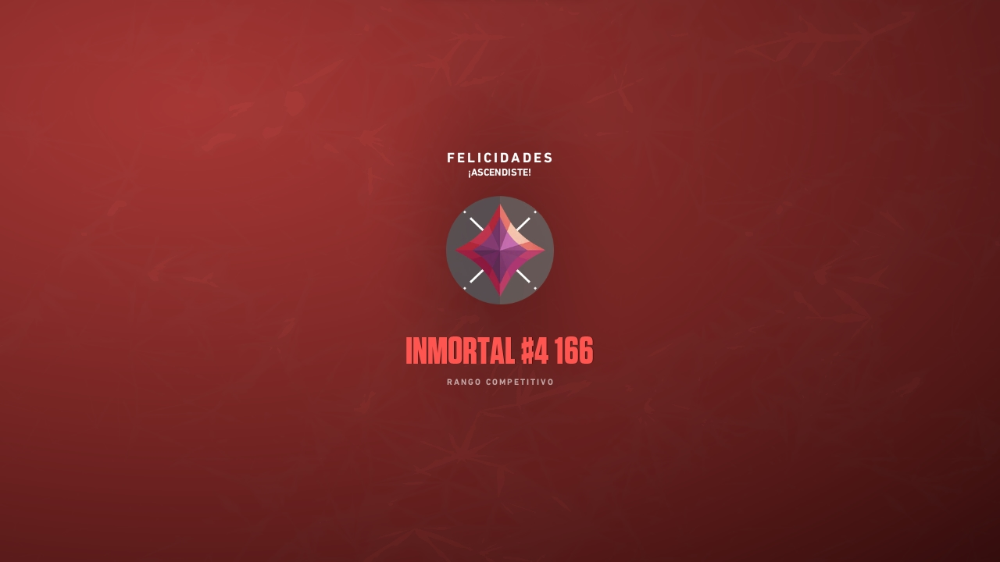

Fines de esta pagina
Hola soy Hector y en la pagina que traigo el dia de hoy comentare algunas aficiones y hobbies que realizo con frecuencia, esta pagina la realizo con fines explicativos y con la intencion de mostrar mis conocimientos sobre como utilizar el lenguaje de programacion para la creacion de paginas.
Que hobbies tengo?
Peliculas
Ver peliculas

Gym


Valorant
Claramente el mejor de KINAL
